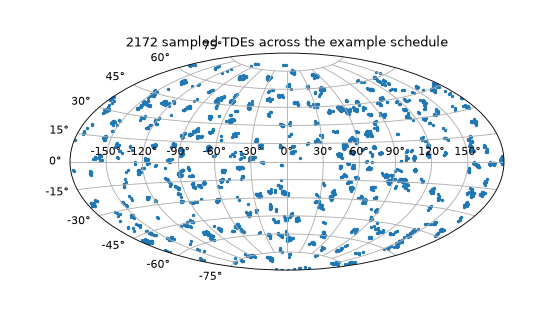
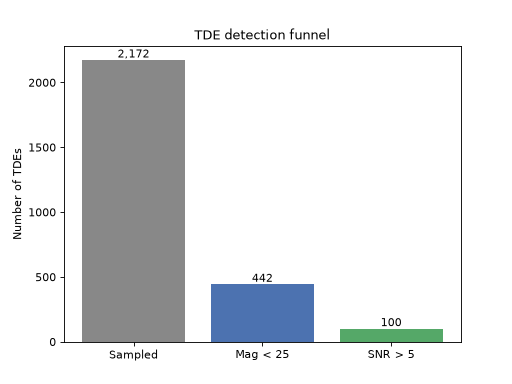
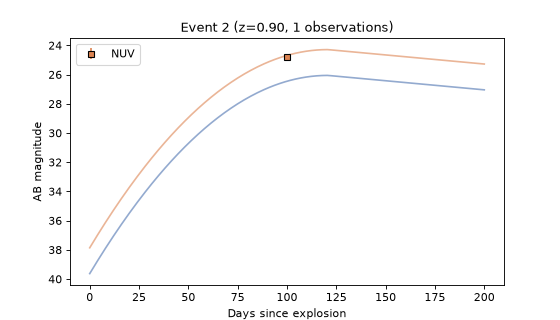

Simulation#
uvex_transients.simulation is where everything else in the package comes together:
a transients population, sampled against a real
SurveySchedule, becomes a Monte Carlo catalog of events –
narrowed down to the ones that actually matter – with real synthetic photometry available for
any one of them on demand. SurveySimulator does the
sampling and screening; EventCatalog holds the
result as a plain, portable data table; and Event
reconstructs one row of that table into something you can query for a light curve or a full
synthetic detection.
This page walks through that pipeline end to end. See Models and Transients for the layers underneath it, and Surveys for the schedule this all gets sampled against.
Quick Look#
The fastest way to get a feel for the pipeline is to run it. As in Surveys, we build a small synthetic schedule here (400 randomly-pointed 3x3 deg fields over 180 days) rather than downloading a real one, so the example below runs offline:
import numpy as np
import matplotlib.pyplot as plt
from astropy import units as u
from astropy.coordinates import EarthLocation, SkyCoord
from astropy.table import QTable
from astropy.time import Time
from regions import RectangleSkyRegion
from uvex_transients.surveys.base import SurveySchedule
from uvex_transients.simulation.core import SurveySimulator
from uvex_transients.transients.TDEs import TidalDisruptionEvent
n = 400
rng = np.random.default_rng(0)
table = QTable()
table["start_time"] = Time("2025-01-01T00:00:00") + np.sort(rng.uniform(0, 180, n)) * u.day
table["duration"] = np.full(n, 900.0) * u.s
table["observer_location"] = EarthLocation.from_geodetic(0 * u.deg, 0 * u.deg, 600 * u.km)
table["action"] = np.full(n, "observe")
table["target_coord"] = SkyCoord(
rng.uniform(0, 360, n) * u.deg,
np.degrees(np.arcsin(rng.uniform(-1, 1, n))) * u.deg,
)
table["roll"] = np.zeros(n) * u.deg
table["field_id"] = np.arange(n)
table["block_id"] = np.zeros(n, dtype=int)
fov = RectangleSkyRegion(center=SkyCoord(0 * u.deg, 0 * u.deg), width=3 * u.deg, height=3 * u.deg)
schedule = SurveySchedule(table, fov)
tde = TidalDisruptionEvent()
simulator = SurveySimulator(schedule, transients={"tde": tde}, simulation_seed=0)
catalog = simulator.generate_events(time_bins=6, nside=32)
fig = plt.figure(figsize=(7, 4))
ax = fig.add_subplot(111, projection="aitoff")
ax.grid(True)
ra = catalog.coord.ra.wrap_at(180 * u.deg).radian
ax.scatter(ra, catalog.coord.dec.radian, s=4, color="C0")
ax.set_title(f"{len(catalog)} sampled TDEs across the example schedule")
(Source code, png, hires.png, pdf)


That’s the whole shape of it: pair a transient population with a schedule, hand both to a
generate_events() call, and get back
every TDE that could plausibly have exploded somewhere the schedule looked. The rest of this page
covers the simulator itself, the cuts that narrow that population down to detections, the actions
that turn a surviving catalog into photometry and per-event summaries, and how to turn any one
surviving row back into a real light curve.
Hint
time_bins above is a plain integer – the number of evenly-spaced bins to divide the
schedule’s own span into. It also accepts an explicit Time array of bin
edges, for windows that don’t line up evenly with the schedule (e.g. one bin per lunation).
The Simulator Object#
SurveySimulator is a thin coordinator: a
SurveySchedule, a {name: transient} dict of
ExtragalacticTransient instances to sample, and a root
seed for reproducibility, all supplied at construction:
from uvex_transients.simulation.core import SurveySimulator
from uvex_transients.transients.TDEs import TidalDisruptionEvent
from uvex_transients.transients.kilonovae import Kilonova
simulator = SurveySimulator(
schedule,
transients={"tde": TidalDisruptionEvent(), "kne": Kilonova()},
simulation_seed=42,
)
simulator.survey_schedule # the SurveySchedule passed in
simulator.transient_collection # the {name: transient} dict
simulator.simulation_seed # 42
Important
Every transient in transients needs its own distinct name – this is the key that ties
each sampled event back to the transient instance that produced it (the catalog’s
transient_type column) and, later, that reconstructs an
Event from a catalog row via
get_events(). See
Transients for configuring a transient’s priors,
duration_limit, or redshift limit before
handing it to the simulator.
Simulating several transient types together, as above, is no different from simulating one –
every step below (generate_events, both filtering methods, and EventCatalog.get_events)
loops over every transient_type present in the catalog, keyed against this same
transient_collection dict.
Generating the Event Catalog#
generate_events() is the main event: a
Monte Carlo realization of every registered transient type, sampled only where and when the
schedule could plausibly have caught it.
Windowed Sampling#
Sampling a transient’s full redshift- and sky-dependent volumetric rate over the entire sky and
survey duration, then throwing away everything the schedule never observed, would waste almost all
of that effort – a real survey only ever covers a small fraction of the sky at any one time. To
avoid that, generate_events() divides the
schedule into time_bins windows and, for each window and each transient type, first asks
get_observed_healpix_ids() which HEALPix pixels
the schedule touches at all between the start of the window and its end plus that transient’s own
duration_limit – i.e. late enough that a transient exploding right at the end of the window
could still be caught while it’s active. Events are then sampled only within those pixels, via
sample_events_on_healpix_grid(), with
explosion times drawn uniformly within the window itself (never the padded tail), so no event is
ever double-counted across adjacent bins. See Transients for how that per-pixel
sampling itself works.
catalog = simulator.generate_events(time_bins=6, nside=32, order="nested")
nside/order set the HEALPix resolution both the coverage lookup and the sampling grid use
– the same tradeoff as everywhere else HEALPix shows up in this package: finer pixels track the
schedule’s real footprint more closely, at the cost of more pixels to sample per bin.
Tip
For a transient type with a very high intrinsic rate, downsample=k draws a random
1/k subset of each per-bin, per-type table (without replacement, seeded off
simulation_seed) instead of sampling the full population. Multiply any downstream count
by k to get back an estimate of the true yield; see the
Survey Transient Simulations example for this in practice. downsample can instead be a
{transient key: k} mapping to downsample types individually – a type left out of the
mapping isn’t downsampled at all. Either form is stashed on the returned
EventCatalog as
downsample, purely as
provenance (nothing rescales counts back up automatically), and every cut carries it through
to its own output catalog unchanged.
Two columns are computed once here, rather than being left for every later step to re-derive: each
event’s luminosity_distance (interpolated off that transient type’s own cached
luminosity_distance_grid, not a
fresh cosmology call per event) and its ebv (one vectorized Milky Way foreground dust-map
query, via uvex_transients.dust, over every sampled position at once).
The Event Catalog#
generate_events() returns an
EventCatalog: a plain data table with no live
reference back to the schedule or the transient instances it was generated from (both are supplied
again, explicitly, wherever they’re needed – see Reconstructing and Simulating Events below). That
makes it trivially picklable and safe to round-trip to disk:
len(catalog) # number of sampled events
catalog.table # the underlying astropy.table.QTable
catalog.to_disk("tde_catalog.ecsv", overwrite=True)
reloaded = EventCatalog.from_disk("tde_catalog.ecsv")
to_disk() writes the table as ECSV
with nside/order/time_bins/seed/downsample stashed in the file’s header, so
from_disk() can reconstruct a
complete EventCatalog from the one file alone. (A file written by an older version of the
package, with no downsample in its header, still reads back fine – it just defaults to
None.)
Every column of catalog.table is also available as a convenience property, returning a plain
array (or Quantity/Time/
SkyCoord, as appropriate) rather than a raw table column:
Column / property |
Type |
Meaning |
|---|---|---|
|
int |
Unique id, assigned once across the whole catalog (not renumbered by filtering). |
|
str |
Which entry of |
|
int |
Index into |
|
int, float, float |
Sampling pixel (at this catalog’s own |
|
Sky position. |
|
|
float |
Cosmological redshift. |
|
Cached at generation time; see Simulation above. |
|
|
float |
Milky Way foreground E(B-V) at |
|
Time of explosion. |
|
|
int |
Regenerates this event’s physical SED parameters on demand – see Reconstructing and Simulating Events below. |
Note
An event’s physical SED parameters (amplitude, rise time, temperature, …) are deliberately
not stored as columns – only the parameter_seed that regenerates them. Storing one
column per parameter would mean a different schema per transient type; regenerating them
lazily from a stored seed keeps EventCatalog – and every filtering method below –
agnostic to which SED any given row actually uses.
Cuts#
A freshly-sampled catalog is dominated by events far too faint to ever matter – most of a
transient’s redshift-limited volume is, by construction, near the limit where it’s essentially
undetectable. A cut is a screening step that takes an
EventCatalog and a
Mission (for its Detector’s bandpasses, even for
the cuts that don’t use it, so every cut shares one call signature) and returns a new
EventCatalog over the surviving rows – nside/order/time_bins/seed/downsample
unchanged, pre_cut_counts unchanged, and original event_id values preserved rather than
renumbered.
Every cut is a filter_by_<name> method on
SurveySimulator, registered under <name> by the
cut() decorator. There are two equivalent ways to call one,
and available_cuts() lists every name:
simulator.available_cuts()
# ('baseline', 'first_visit_detected', 'limiting_magnitude', 'peak_flux', ...)
# Directly...
kept = simulator.filter_by_redshift(catalog, mission, max_redshift=0.5)
# ...or by name, which is what the CLI's ``cut`` steps do.
kept = simulator.run_cut("redshift", catalog, mission, max_redshift=0.5)
Cuts never modify their input, so one catalog can feed any number of independent branches. See Combining Cuts for recombining branches, and Command-Line Interface for declaring a chain of cuts in a run-config.
The Standard Funnel#
The two cuts used in nearly every run are limiting_magnitude and snr, in that order:
a cheap pass that throws away the hopeless majority, then the expensive, schedule-aware pass on
what remains.
Method: filter_by_limiting_magnitude()
Description: Schedule-independent – it never checks whether the schedule actually
pointed anywhere near an event. For each transient type, every event’s own physical
parameters are regenerated from its stored parameter_seed and evaluated over a shared
linspace(0, duration_limit, n_phase) phase grid, the same grid for every event of that
type; an event survives if its brightest requested band clears mag_limit at n_visits
or more of those phase samples.
mag_filtered = simulator.filter_by_limiting_magnitude(
catalog, mission, mag_limit=25.0,
)
Uses: A cheap first pass: “could this event, at its absolute brightest, ever be seen at
all?” chunk_size bounds peak memory (evaluation broadcasts every event and phase sample
into one dense array at once), and raising n_visits above its default of 1 discards
events that only momentarily clear the limit.
Method: filter_by_snr()
Description: The real question, schedule and all: over every observation the schedule
actually made of an event’s position while it was active, is it ever detected above
snr_threshold? Every surviving event’s observations are gathered with one batched
get_observation_indices_of() call per
chunk (see Surveys), then evaluated together with
get_snr(). Each observation is judged on a measured SNR (a
simulated noisy measurement, the same one
simulate_photometry() makes), and epochs before
the explosion never count.
detected = simulator.filter_by_snr(
mag_filtered, mission, snr_threshold=5.0,
)
Uses: The actual detected population. Run it against the output of
filter_by_limiting_magnitude, not the raw catalog – it’s the more expensive of the two
(every remaining event costs at least one schedule query), so there’s no reason to pay that
cost on events the cheap pass would have rejected anyway.
Note
By default, filter_by_snr also drops an event whose only qualifying epoch falls on
its field’s first-ever visit (exclude_first_visit_detections=True), since that
detection has no earlier reference image to be judged against. On a real schedule, which
revisits fields, this removes a small fraction of events. The tiny synthetic schedule used
in this guide visits almost every field exactly once, so the example below passes
exclude_first_visit_detections=False to keep a population worth plotting.
# ``uvex_fast`` is ``m4opt.missions.uvex`` with its dense bandpass tables downsampled (see
# ``uvex_transients.missions``); band integrals agree to about 1e-3 mag for thermal spectra.
from uvex_transients.missions import uvex_fast as uvex
mission = uvex
mag_filtered = simulator.filter_by_limiting_magnitude(catalog, mission, mag_limit=25.0)
detected = simulator.filter_by_snr(
mag_filtered, mission, snr_threshold=5.0, exclude_first_visit_detections=False
)
stages = ["Sampled", "Mag < 25", "SNR > 5"]
counts = [len(catalog), len(mag_filtered), len(detected)]
fig, ax = plt.subplots()
ax.bar(stages, counts, color=["#888888", "#4C72B0", "#55A868"])
for i, count in enumerate(counts):
ax.text(i, count, f"{count:,}", ha="center", va="bottom")
ax.set_ylabel("Number of TDEs")
ax.set_title("TDE detection funnel")






Cut Reference#
Every registered cut, grouped by what it needs to evaluate. The columns give each cut’s registered
name, what it keeps, and its parameters (required parameters in bold; anything not listed is
optional). Where a cut takes a min_/max_ pair, either bound may be left out to leave that
side unconstrained, but at least one must be given.
Catalog-column cuts. These read only columns the catalog already carries, so they cost
essentially nothing and need neither the schedule nor the detector (the mission argument is
accepted and ignored). Use them freely, in any order, at any point.
Cut |
Keeps events… |
Parameters |
|---|---|---|
|
whose |
|
|
whose |
types |
|
inside a sky region: a |
region |
|
inside ( |
frame, |
|
for which a boolean expression over the catalog’s own columns is true. Each column is bound
to its native |
expr |
kept = simulator.filter_by_sky_position(
catalog, mission, frame="galactic", theta_min=-10, theta_max=10, mode="exclude"
)
kept = simulator.filter_by_query(catalog, mission, expr="(redshift < 0.3) & (ebv < 0.1)")
Intrinsic brightness cuts. These regenerate each event’s physical parameters from its
parameter_seed and evaluate its SED over a shared [0, duration_limit] phase grid, keeping
the events whose peak falls in a range. They are purely intrinsic (plus distance for the first
two): no schedule, no detector background, and, unlike limiting_magnitude, no Milky Way dust.
Unlike a one-sided threshold they can also reject events that are too bright, which is useful
for isolating a population or discarding unphysical draws.
Cut |
Keeps events… |
Parameters |
|---|---|---|
|
whose brightest apparent AB magnitude, in the brightest of |
|
|
the same evaluation as |
|
|
whose peak rest-frame bolometric luminosity, in erg/s, lies in
|
|
Detector-aware cuts. The limiting_magnitude and snr pair described
above; the first needs the detector’s bandpasses, the second
also the schedule.
Cut |
Keeps events… |
Parameters |
|---|---|---|
|
whose brightest band clears |
mag_limit, |
|
with at least |
snr_threshold, |
Detection-timing cuts. These are schedule-aware like snr, and share its definition of a
detection: an epoch after the explosion whose measured SNR exceeds snr_threshold. An event
with no detection never survives any of them. They answer the questions that depend on when the
survey saw an event, not merely whether it did.
Cut |
Keeps events… |
Parameters |
|---|---|---|
|
except those with exactly one qualifying detection that falls on their field’s very first
visit. With no earlier template image to difference against, such a detection is not
recoverable. Events with zero or two-or-more detections are untouched, so on its own this
cut does not enforce detection. It is the standalone form of |
snr_threshold, |
|
whose delay from explosion to first detection, in days, lies in |
snr_threshold, |
|
with both at least one pair of detections closer together than |
snr_threshold, |
|
whose last non-detection before the first detection is between |
snr_threshold, |
# Detected within 3 days of explosion, and with the explosion bracketed to within 2 days.
fast = simulator.filter_by_time_to_first_detection(detected, mission, snr_threshold=5.0, max_delay=3.0)
bracketed = simulator.filter_by_time_since_last_nondetection(fast, mission, snr_threshold=5.0, max_delay=2.0)
Important
The detection-timing cuts re-measure every remaining event’s observations, exactly as snr
does. The measurement noise is keyed on each event’s parameter_seed, the observation’s start
time, and the band, so it is deterministic: an epoch is a detection in every cut or in none. Cheap catalog-column and intrinsic cuts should still go first, to keep the number
of events paying the schedule query as small as possible.
Note
When driven from a run-config, any cut can also be restricted to a subset of the transient
types with the step’s transient_types: key, which leaves every other type untouched. That
is handled by the CLI’s step executor rather than by the cuts themselves, so it has no
equivalent argument on the methods above; in Python, apply the cut to one type’s rows and
recombine the result with the rest via union. See Command-Line Interface.
Combining Cuts#
Because every cut preserves event_id, independent branches of a cut chain can be recombined
afterward by set operations in uvex_transients.simulation.logical_ops: union
(deduplicated by event_id), intersection (catalogs[0]’s rows that appear in every
other input), and difference (a - b, exactly two inputs). They are useful for asking which
events two independent screens agree on, or which only one of them caught. All inputs must share
nside/order and come from the same generation run (matching pre_cut_counts):
from uvex_transients.simulation.logical_ops import difference, intersection, union
bright = simulator.filter_by_limiting_magnitude(catalog, mission, mag_limit=25.0)
nearby = simulator.filter_by_redshift(catalog, mission, max_redshift=0.3)
both = intersection([bright, nearby])
only_bright = difference([bright, nearby])
either = union([bright, nearby])
These are fixed, closed operations, not a registry like cuts and actions. In a run-config they
are the logical_op step type.
Exposure and Yield#
A raw or filtered EventCatalog count is a realization, not an estimate – to turn one into a
formal expected-detection number with confidence bounds (Yield Statistics derives every
estimator below), you also need to know how much of the sky the survey actually covered.
compute_effective_exposure() answers that,
independent of any Monte Carlo draw: it reruns exactly the same per-bin, per-type footprint query
generate_events restricts its own sampling to, but reduces it to a solid angle instead of a
drawn population:
exposure = simulator.compute_effective_exposure(time_bins=6, nside=32)
exposure.total_effective_exposure # {transient type: total solid-angle*time exposure}
exposure.total_expected_events # {transient type: mu_0, the footprint-aware expected count}
exposure.coverage_fraction # {transient type: fraction of the full 4*pi sky-time swept}
The returned ExposureCatalog has one row per
(transient type, time bin) – the same time_bins/nside/order as generate_events
should always be passed here too, so both describe the same footprint query. Each row’s
expected_events is effective_exposure * transient.integrated_rate – Yield Statistics’s
\(\mu_0\) for that bin – so summing it over every bin (total_expected_events) gives the
intrinsic expected count actually reachable by this schedule’s footprint, not
compute_all_sky_yield()’s idealized
full-sky number. get_exposure_between()/
get_expected_events_between() and
rebin() let you query or
re-tile that same tabulated exposure over an arbitrary sub-window or a different time binning
without re-querying the schedule.
Actions#
Where a cut maps one EventCatalog to another, an action is post-processing that produces
something else: a table of synthetic photometry or a per-event summary. Actions are registered
with the action() decorator, listed by
available_actions(), and callable either as
run_<name>_action methods or by name with
run_action() (what the CLI’s action
steps do). There are two:
Action |
Inputs |
Produces |
|---|---|---|
|
|
A |
|
|
One plain |
simulator.available_actions()
# ('event_summary', 'photometry')
photometry = simulator.run_photometry_action(detected, mission)
# equivalently: simulator.run_action("photometry", mission, catalog=detected)
photometry is the expensive step every cut above was designed to defer, so run it on the
output of the cuts, never on a raw catalog. It is the same computation as
EventCatalog.simulate_photometry(),
with the simulator’s own transients and schedule supplied for you.
Summarizing events and estimating yields#
Every EventCatalog records pre_cut_counts: how
many events of each transient type were generated. No cut, set operation, or other row selection
changes it, which makes it the denominator of every later detection fraction.
run_event_summary_action() reduces a
(typically SNR-cut) catalog, together with its exposure and photometry, to one row per event:
summary = simulator.run_event_summary_action(
catalog=detected, exposure=exposure, photometry=photometry, mission=mission, snr_threshold=5.0
)
Column(s) |
Meaning |
|---|---|
|
The catalog’s own columns, carried through. |
|
Whether the event falls inside each named footprint ( |
|
The expected number of real events this row stands for, \(\mu_0 / n_{\rm generated}\) for its type. Summing it over any selection gives that selection’s expected yield. |
|
How often, and when first and last, the schedule observed the event. |
|
The same for detections (post-explosion, measured SNR above |
|
The field of the first detection, and the time of the first downlink after it plus
|
|
The last non-detection before the first detection, and its SNR. |
|
The last non-detection whose rise to the first detection is significant to at least
|
|
Peak behavior from |
The first-visit exclusion of snr is not re-applied here, so pass a catalog that has already been
through it if that matters. The table’s meta carries the generation count, each type’s intrinsic
expected event count (\(\mu_0\), from the exposure catalog), and its rate-uncertainty factors, so
a slice of it still knows everything needed to turn a selection into a yield. Cut it however you like,
then pass the boolean mask of the rows you want to
estimate_yield():
from uvex_transients.simulation.rates import estimate_yield
estimate_yield(summary) # per type, for the cuts the summary was built from
delay = (summary["t_first_det"] - summary["t_last_nondet"]).to_value("hr")
estimate_yield(summary, mask=delay <= 6)
For each type it returns the fraction \(k/n\) of generated events selected, the expected number of real events \(\mu_0 k/n\), a Clopper-Pearson (Monte Carlo) interval on it, and a separate interval from the rate normalization, kept apart rather than combined. Types are not summed, since that would mix independent Monte Carlo errors with a shared rate uncertainty.
Reconstructing and Simulating Events#
Every screening step above works with cheap, batched approximations – a shared phase grid, a
single flux point at each band’s pivot wavelength. Getting a real, per-observation synthetic
light curve for one particular event means reconstructing it as a full
Event, via
get_events(). Because an
EventCatalog holds no live reference to the schedule or the transients it came from (see
above), both are supplied again here – typically the same ones the catalog was generated with:
event = detected.get_events(int(detected.event_id[0]), {"tde": tde}, schedule)
print(event)
... <Event id=19 type='tde' z=0.7097 n_observations=2>
Building an Event runs exactly one query against the schedule
(get_observations_of()) to find which scheduled
observations actually covered it while active – available as
observations
(n_observations) – alongside its coord,
redshift, luminosity_distance, ebv, and t_explosion. No photometry is done yet at
this point; sample_parameters() regenerates its
physical SED parameters (deterministically, from the same stored parameter_seed) as a pure,
idempotent lookup any of the methods below can call as many times as needed.
Theoretical Curves#
mag(),
flux(), and
luminosity() give the noiseless truth this event’s
real photometry (below) scatters around – the first two folding in this event’s own redshift,
distance, and foreground dust; the last a rest-frame, distance-independent bolometric quantity:
t = np.linspace(0, tde.duration_limit.to_value(u.day), 300) * u.day
event.mag(t, mission, band="NUV") # apparent AB magnitude
event.flux(t, mission, band="NUV") # observed flux density, at the band's pivot wavelength
event.luminosity(t) # rest-frame bolometric L_bol(t)
Synthetic Photometry#
simulate_photometry() is the expensive step every
earlier screening pass was designed to defer: real, per-observation, per-band synthetic photometry
against every observation in observations, batched into one
get_snr() call per band regardless of how many observations there
are:
event = detected.get_events(int(detected.event_id[0]), {"tde": tde}, schedule)
phot = event.simulate_photometry(mission)
t_since_explosion = (phot["obs_time"] - event.t_explosion).to(u.day)
t_theory = np.linspace(0, tde.duration_limit.to_value(u.day), 300) * u.day
fig, ax = plt.subplots(figsize=(7, 4))
for band, color in {"FUV": "#4C72B0", "NUV": "#DD8452"}.items():
ax.plot(t_theory.value, event.mag(t_theory, mission, band=band).value, color=color, lw=1.5, alpha=0.6)
in_band = np.isfinite(phot["ab_mag"]) & (phot["band"] == band)
if np.any(in_band):
ax.errorbar(
t_since_explosion[in_band].value,
phot["ab_mag"][in_band],
yerr=phot["mag_err"][in_band],
marker="s", mfc=color, mec="k", ecolor=color, linestyle="none", label=band,
)
ax.invert_yaxis()
ax.set_xlabel("Days since explosion")
ax.set_ylabel("AB magnitude")
ax.set_title(f"Event {event.event_id} (z={event.redshift:.2f}, {event.n_observations} observations)")
ax.legend()





This example schedule only ever visits a given field once, so most of its events – like this one – end up with just one or two associated observations; see the Survey Transient Simulations for the same workflow against a real, densely-cadenced UVEX schedule.
Each returned row is a Gaussian realization of the true flux at that observation’s implied SNR,
not the ground truth itself – flux/ab_mag and their symmetric-in-flux n_sigma bounds
(flux_upper/flux_lower, transformed separately to mag_upper/mag_lower rather than
through a single linearized mag_err) are nan wherever the noisy draw itself isn’t securely
above zero flux – the correct behavior at low SNR, not a bug. The whole event replays identically
given the same parameter_seed, since every parameter draw and every band’s noise realization
comes from one RNG seeded from it.
See the Survey Transient Simulations for a full worked example of this entire pipeline against a real
UVEX schedule, and uvex_transients.simulation in the API reference for exhaustive
method-by-method detail.